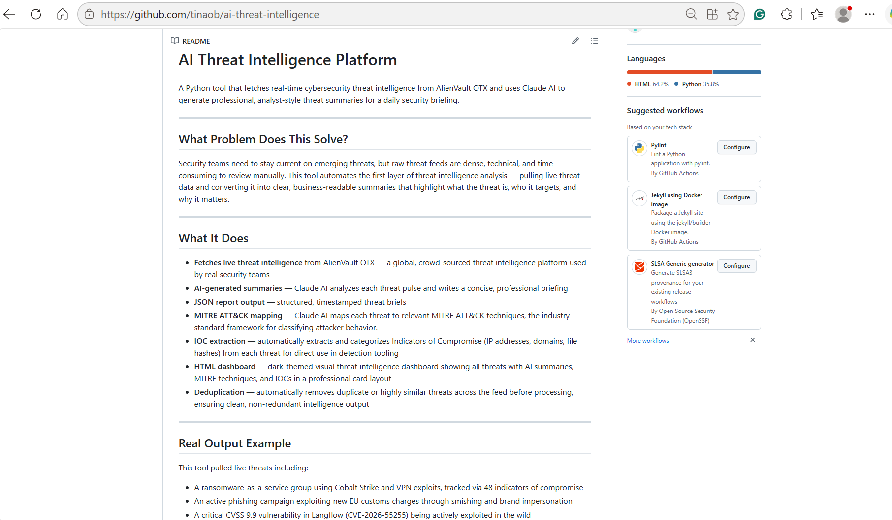
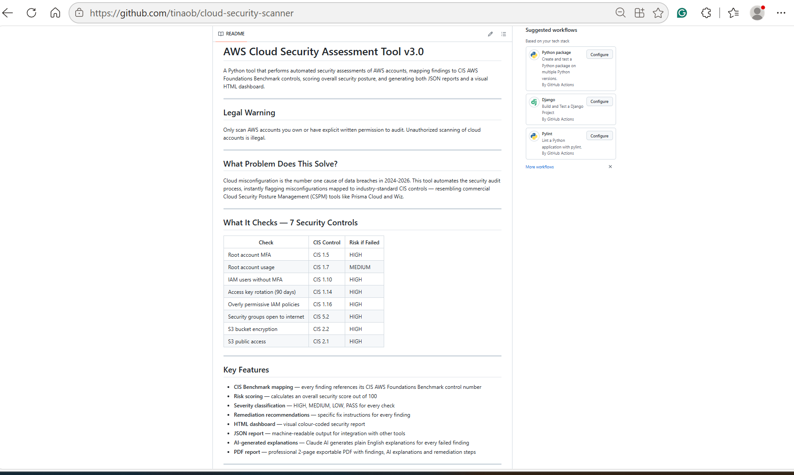
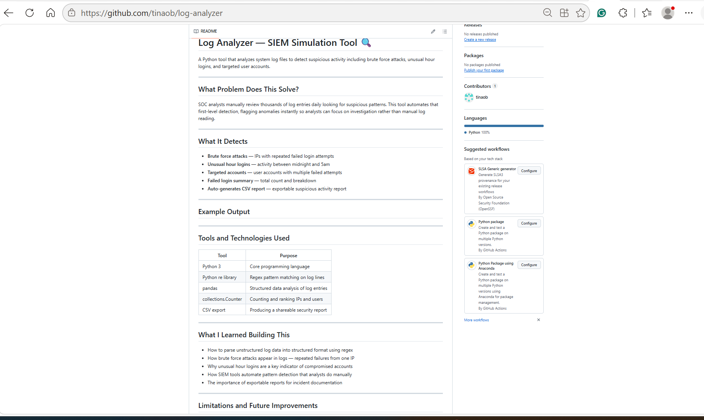
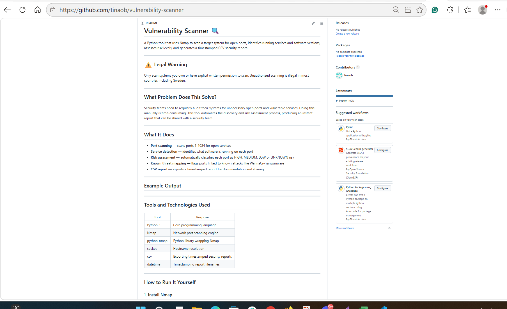
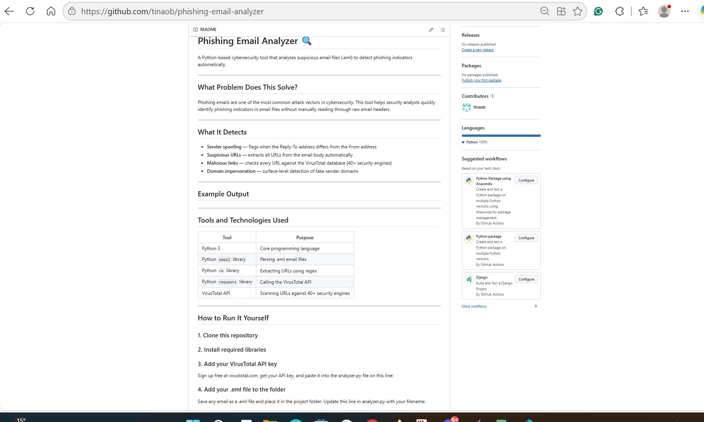
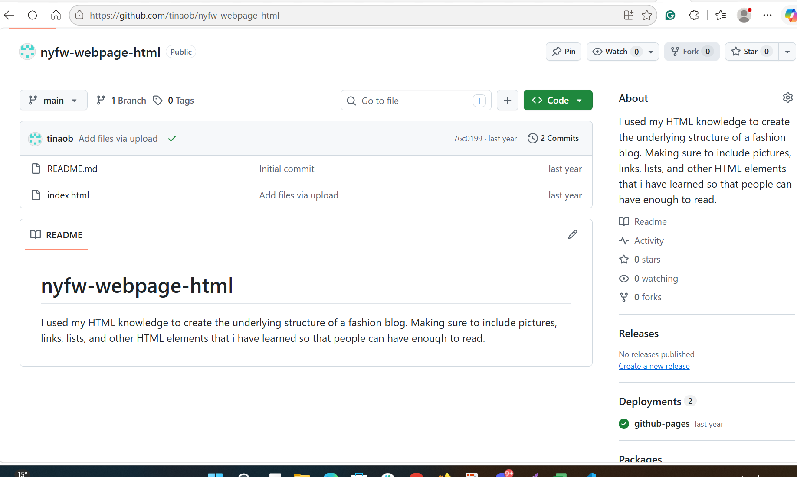
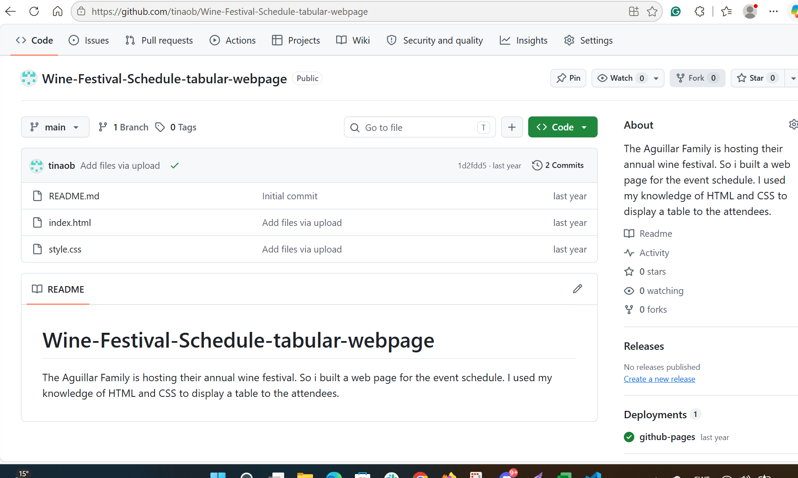
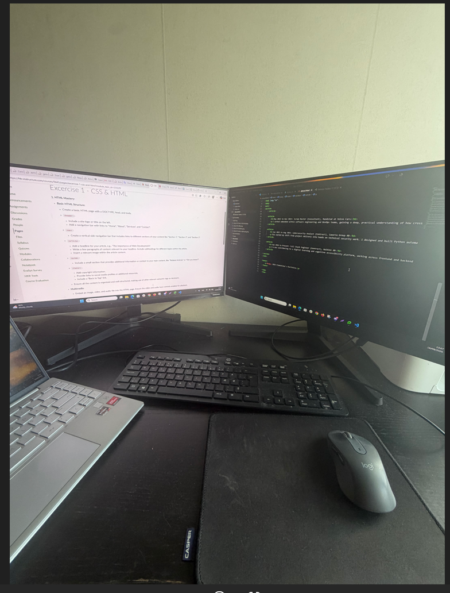
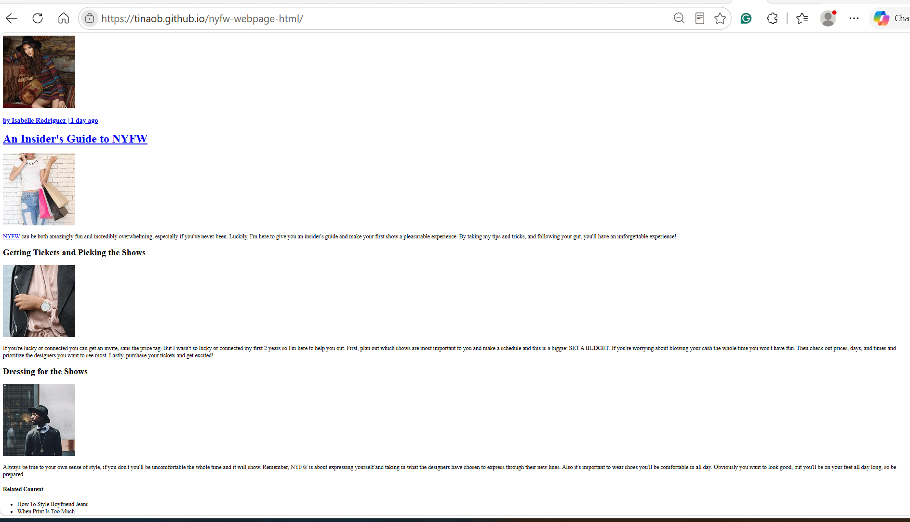

A collection of projects I've built and the workspace behind them.

AI Threat Intelligence Platform.Decision: I wanted threat intelligence to be easier to understand, so I collected data from REST APIs such as AlienVault OTX, removed duplicates, and used AI to summarise threats and map them to MITRE ATT&CK. Difficulty: Combining information from different sources without losing important threat details. Outcome: The project brings threat information together and shows summaries and ATT&CK mappings in a dashboard.

Cloud Security Misconfiguration Scanner.Decision: I wanted to learn how to find common AWS security risks with code, so I used Python and boto3 to work with AWS services. Difficulty: Collecting the configuration data and checking different issues, such as missing MFA, publicly accessible S3 buckets and old access keys. Outcome: The scanner checks selected misconfigurations and organises the findings into a structured report.

Log Analyzer / SIEM Simulation.Decision: I wanted hands-on practice analysing security logs, so I focused on patterns such as repeated failed logins and unusual login behaviour. Difficulty: Telling potentially suspicious patterns apart from ordinary activity, and presenting the findings clearly. Outcome: The project organises events and highlights activity that needs further investigation.

Vulnerability Scanner (2024): combines Python and Nmap for network discovery and risk assessment.

Phishing Email Analyzer.Decision: I wanted to understand how a suspicious email can be assessed with technical evidence, so I used email-header analysis together with the VirusTotal API. Difficulty: Bringing information from the email headers and the external threat-intelligence results together to judge whether an email might be malicious. Outcome: The tool inspects email information and adds external threat-intelligence data to the analysis.

Fashion Blog (2023): an early HTML5 and CSS3 project practicing semantic structure and responsive layout.

Wine Festival Schedule (2023): an HTML table based event schedule page.

My workspace, where most of these projects came to life.

Live view of my Fashion Blog (2023), deployed on GitHub Pages, an early project practicing semantic HTML5 and CSS3 layout.